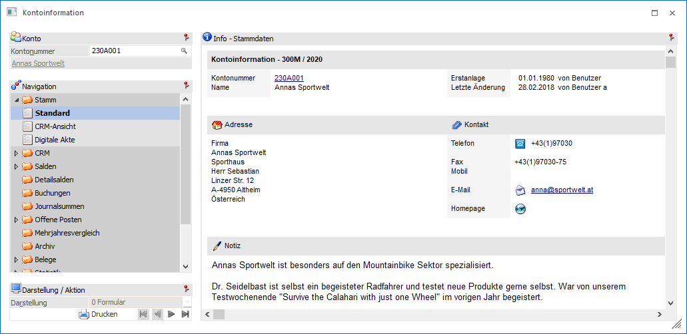
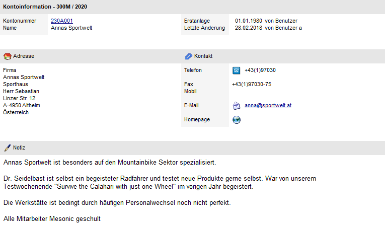
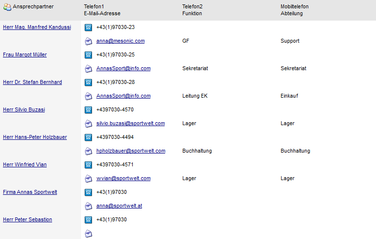
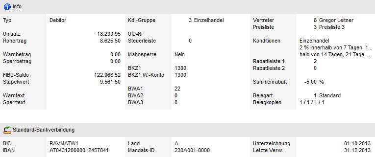
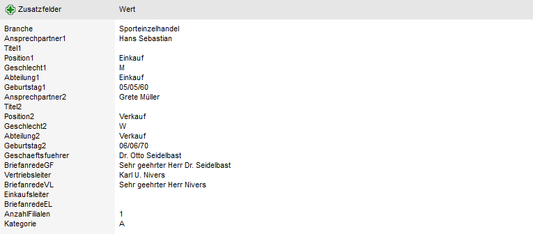
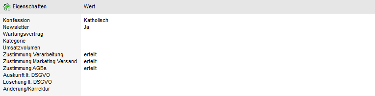
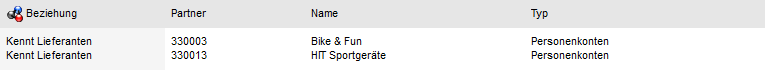
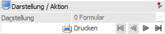

Kontoinformation - Bereich "Stamm" - Ansicht "Standard"
In der Ansicht "Standard" werden die Stammdaten des Kontos dargestellt.

Die Ansicht "Standard" besteht aus den folgenden Info-Elementen:
ü Info - Stammdaten
ü Darstellung / Aktion
Info - Stammdaten
Die Anzeige ist in die folgenden Datenbereiche unterteilt:
Ø Adresse
In den ersten beiden Teilen erhalten man einerseits die Informationen bezüglich der Anschrift des Kontos, den Kontaktdaten und den Inhalt des Registers "Notiz" aus dem Personenkontenstamm.

Ø Ansprechpartner
Es werden die im Register "Ansprechp." des Personenkontenstamms eingetragenen Ansprechpartner angezeigt (bei einem Klick auf den Namen wird der Kontaktestamm geöffnet, in welchem die detaillierten Stammdaten des Ansprechpartners angezeigt werden).
Durch Anwahl des Telefonsymbols wird die TAPI-Schnittstelle aktiviert. Sofern die technischen Voraussetzungen gegeben sind (installierte TAPI-Treiber - Telephone Application Programm Interface), kann somit direkt aus der WinLine ein Anruf durchgeführt werden. Durch Anwahl der E-Mail-Adresse kann das Mail-Programm geöffnet werden, wobei der Empfänger gleich automatisch mit der gewählten Adresse vorbelegt wird.

Ø Basis-Information
Es werden die wichtigsten Informationen aus den Registern "Fibu" und "Fakt" aus den Stammdaten angezeigt.

Ø Zusatzfelder
Hier werden die 30 Zusatzfelder, sowie deren Inhalt, aus den Stammdaten angezeigt.

Ø Eigenschaften
An dieser Stelle werden die Eigenschaften des Kontos angezeigt.
Hinweis
Im Programm Einstellungen - Konten (Option "kompri. Eigenschaften") kann definiert werden, ob nicht genutzte Eigenschaften ausgeblendet werden sollen.

Ø Beziehungen
Die Beziehungen, welche bei dem Konto hinterlegt wurden, werden in diesem Datenbereich angezeigt.

Darstellung / Aktion

Ø Submand.
Die Option "Submand." (alle Submandanten) ist im Bereich "Stamm" nur dann vorhanden, wenn die Konzern-Konsolidierung im Einsatz ist. Damit kann gesteuert werden, ob die Informationen aus den Sub-Mandanten in den einzelnen Bereichen mit angezeigt werden sollen. Diese Einstellung wird benutzerspezifisch gespeichert.
Ø Drucken
Durch Anwahl dieses Buttons wird die aktuelle Ansicht ausgedruckt.
Ø  VCR-Buttons
VCR-Buttons
Sollte die Anzeige der Stammdaten-Info über mehrere Seiten erfolgen, so kann mit Hilfe der VCR-Buttons zwischen den einzelnen Seiten gewechselt werden.